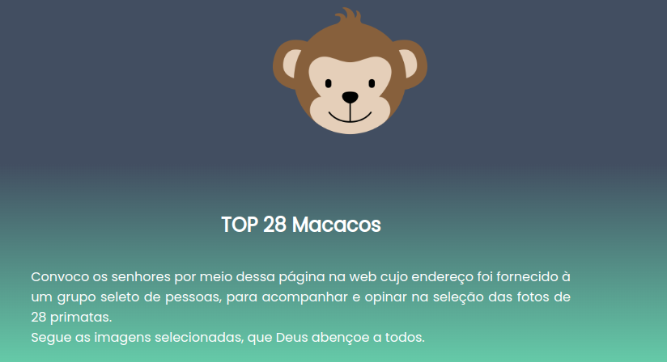
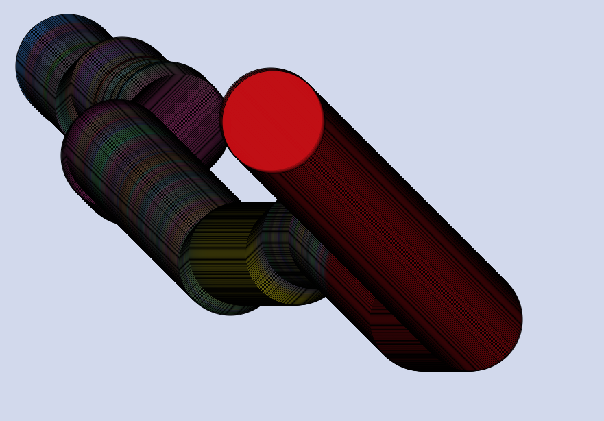
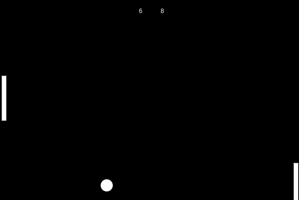

Meus projetos

Minha Galeria: Top 28 Macacos
Neste projeto eu reuni 28 fotos de macacos nas mais variadas situações e nomeei cada imagem.

P5js: Animação
Neste projeto eu animei um circulo que alterna suas cores conforme os cliques do mouse e segue a direção conforme o cursor do mouse

Jogo: Pong no Java
Neste projeto eu recriei o clássico jogo do pong, primeiro jogo a ser criado, na linguagem java.